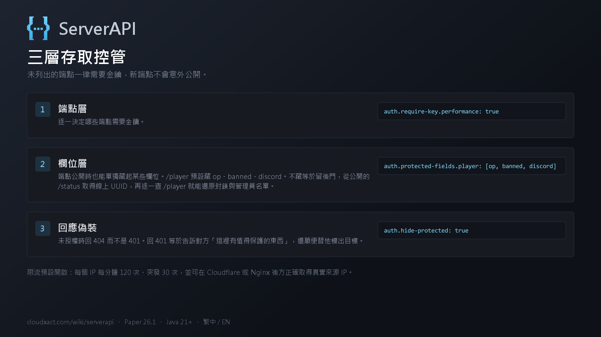
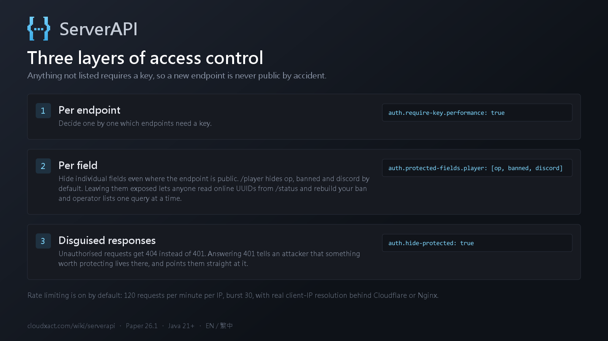

驗證與權限Authentication
金鑰以標頭帶入，或（若開啟 auth.allow-query-key）用網址參數：
curl -H "X-API-Key: <金鑰>" http://localhost:8080/api/v1/plugins
curl "http://localhost:8080/api/v1/plugins?key=<金鑰>"
三層控管
端點層 —— auth.require-key.<端點> 逐一決定。
未列出的端點預設需要金鑰，新端點不會意外公開。
欄位層 —— auth.protected-fields.<端點> 指定「端點公開、但這些欄位要藏起來」。
欄位名在任意層級比對並移除，被隱藏的欄位會列在 meta.hiddenFields。
protected-fields:
server: ["motd", "ip", "port"]
worlds: ["seed"]
player: ["op", "banned", "discord"]/player 預設藏起 op 與 banned 是有原因的：這兩項在
/operators、/bans 都需要金鑰，不擋等於留一扇後門 —— 從公開的
/status 取得線上 UUID，再逐一查 /player 就能還原那兩份名單。
回應偽裝 —— auth.hide-protected 開啟時，未授權的請求會收到 404 而非 401。
回 401 等於告訴對方「這裡有值得保護的東西」並替他標出目標。此時索引也不會列出受保護的端點。
auth.enabled 為 false 時整套驗證關閉，上述設定一律不生效，
所有端點與欄位皆公開。設定檔裡標著 require-key: true 也一樣。
插件會在啟動時警告這個狀態。
Send the key as a header, or as a query parameter when auth.allow-query-key is on:
curl -H "X-API-Key: <key>" http://localhost:8080/api/v1/plugins
curl "http://localhost:8080/api/v1/plugins?key=<key>"
Three layers
Per endpoint — auth.require-key.<endpoint>.
Anything not listed defaults to requiring a key, so a new endpoint is never public by accident.
Per field — auth.protected-fields.<endpoint> hides individual fields even
when the endpoint is public. Names match at any depth, and what was removed is listed in
meta.hiddenFields.
protected-fields:
server: ["motd", "ip", "port"]
worlds: ["seed"]
player: ["op", "banned", "discord"]/player hides op and banned for a reason: both are
key-protected on /operators and /bans, and leaving them exposed is a back
door — read online UUIDs from the public /status, then query /player one
by one to rebuild both lists.
Disguised responses — with auth.hide-protected on, unauthorised requests get a
404 instead of a 401. Answering 401 tells an attacker that something worth protecting lives there and
points them at it. The index also omits protected endpoints while this is on.
auth.enabled is false the whole check is off and none of the
above applies — every endpoint and field is public, even those marked
require-key: true. The plugin warns about this state at startup.